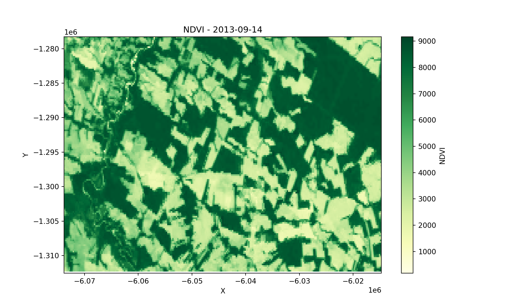
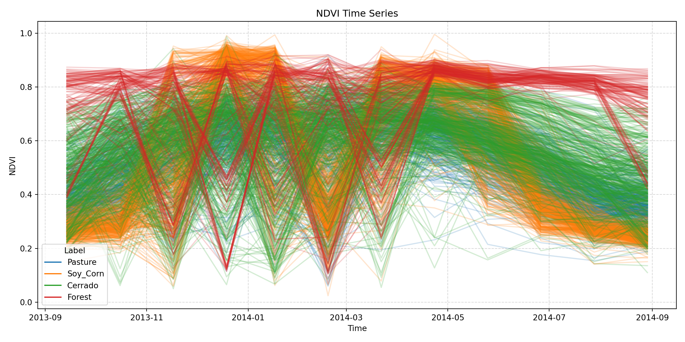

# load package "tibble"
library(tibble)
# load packages "sits" and "sitsdata"
library(sits)
library(sitsdata)
# required packages to demonstrate examples
library(sf)
library(stars)
library(terra)
# set tempdir if it does not exist
tempdir_r <- "~/sitsbook/tempdir/R/annex_export"
dir.create(tempdir_r, showWarnings = FALSE)27 Exporting data to other packages
Configurations to run this chapter
# load "pysits" library
from pysits import *
from pathlib import Path
# set tempdir if it does not exist
tempdir_py = Path.home() / "sitsbook/tempdir/Python/annex_export"
tempdir_py.mkdir(parents=True, exist_ok=True)27.1 R formats
This section demonstrates how to export sits data to commonly used data structures in R, facilitating integration with other R packages.
27.1.1 Exporting time series data to sf
The sf package is the backbone of geospatial vector processing in R [1]. To export time series tibbles from sits to sf, the function sits_as_sf() creates an sf POINT object with the locations of each sample and includes the time_series column as a list. Each row in the sf object contains the time series associated to the sample.
# Export a sits tibble to sf
sf_obj <- sits_as_sf(samples_modis_ndvi)
# Display the sf object
sf_objSimple feature collection with 1218 features and 8 fields
Geometry type: POINT
Dimension: XY
Bounding box: xmin: -60.4875 ymin: -17.4373 xmax: -51.565 ymax: -9.3126
Geodetic CRS: WGS 84
# A tibble: 1,218 × 9
crs geometry longitude latitude start_date end_date
* <chr> <POINT [°]> <dbl> <dbl> <date> <date>
1 EPSG:4326 (-55.1852 -10.8378) -55.2 -10.8 2013-09-14 2014-08-29
2 EPSG:4326 (-57.794 -9.7573) -57.8 -9.76 2006-09-14 2007-08-29
3 EPSG:4326 (-51.9412 -13.4198) -51.9 -13.4 2014-09-14 2015-08-29
4 EPSG:4326 (-55.9643 -10.0621) -56.0 -10.1 2005-09-14 2006-08-29
5 EPSG:4326 (-54.554 -10.3749) -54.6 -10.4 2013-09-14 2014-08-29
6 EPSG:4326 (-52.4572 -10.9512) -52.5 -11.0 2013-09-14 2014-08-29
7 EPSG:4326 (-52.1443 -13.9981) -52.1 -14.0 2013-09-14 2014-08-29
8 EPSG:4326 (-57.6907 -13.3382) -57.7 -13.3 2015-09-14 2016-08-28
9 EPSG:4326 (-54.7034 -16.4265) -54.7 -16.4 2015-09-14 2016-08-28
10 EPSG:4326 (-56.7898 -11.4209) -56.8 -11.4 2011-09-14 2012-08-28
# ℹ 1,208 more rows
# ℹ 3 more variables: label <chr>, cube <chr>, time_series <list>27.1.2 Exporting data cubes to stars
The stars R package handles spatiotemporal arrays. It provides a general framework for working with raster and vector data. Data cubes in sits can be converted to stars objects using sits_as_stars(). By default, the stars object will be loaded in memory. This can result in heavy memory usage. To produce a stars.proxy object, users have to select a single date, since stars does not allow proxy objects to be created with two dimensions.
# create a data cube from a local set of TIFF files
# this is a cube with 23 instances and one band ("NDVI")
data_dir <- system.file("extdata/raster/mod13q1", package = "sits")
cube <- sits_cube(
source = "BDC",
collection = "MOD13Q1-6.1",
data_dir = data_dir
)
stars_object <- sits_as_stars(cube)
# plot the first date of the stars object
plot(stars_object[,,,,1])
27.1.3 Exporting data cubes to terra
The terra package in R is a high-performance framework for spatial raster and vector data analysis. It was developed as the successor to the older raster package, offering a faster, more memory-efficient, and flexible API for working with geographic data. To export data cubes to terra, sits uses sits_as_terra() function which takes information about files, bands and dates in a data cube to produce an object of class SpatRaster in terra. Because terra does not understand multi-tiles and multi-temporal cubes, users have to select a tile and a date from the data cube. By default, all bands are included in the terra object, but users can also select which bands to export.
# create a data cube from a local set of TIFF files
# this is a cube with 23 instances and one band ("NDVI")
data_dir <- system.file("extdata/raster/mod13q1", package = "sits")
cube <- sits_cube(
source = "BDC",
collection = "MOD13Q1-6.1",
data_dir = data_dir
)
terra_object <- sits_as_terra(cube, date = "2013-09-14")
# plot the first date of the stars object
terra_objectclass : SpatRaster
size : 147, 255, 1 (nrow, ncol, nlyr)
resolution : 231.6564, 231.6564 (x, y)
extent : -6073798, -6014726, -1312333, -1278280 (xmin, xmax, ymin, ymax)
coord. ref. : +proj=sinu +lon_0=0 +x_0=0 +y_0=0 +R=6371007.181 +units=m +no_defs
source : TERRA_MODIS_012010_NDVI_2013-09-14.jp2
name : TERRA_MODIS_012010_NDVI_2013-09-14 27.2 Python formats
This section presents the available options for Python users to export sits data to various formats for further analysis and interoperability
27.2.1 Exporting time series and data cubes to xarray
The xarray library is a core tool for labeled multi-dimensional arrays in Python and it is widely used for handling various types of data, including time-series and Earth Observation Data Cubes. This section presents how to convert sits objects to xarray.
Exporting data cubes
Data cubes in sits can be converted to xarray objects using sits_as_xarray(). By default, the xarray object will be loaded in memory. This can result in heavy memory usage.
from pysits import sits_cube, sits_as_xarray
from pysits import r_package_dir
# Create a data cube from a local set of TIFF files
# this is a cube with 23 instances and one band ("NDVI")
data_dir = r_package_dir("extdata/raster/mod13q1", package = "sits")
# Load cube
cube = sits_cube(
source = "BDC",
collection = "MOD13Q1-6.1",
data_dir = data_dir
)
# Transform to xarray
xcube = sits_as_xarray(cube)
xcube<xarray.Dataset> Size: 2MB
Dimensions: (time: 12, y: 148, x: 255)
Coordinates:
* time (time) datetime64[ns] 96B 2013-09-14 2013-10-16 ... 2014-08-29
* y (y) float64 1kB -1.278e+06 -1.279e+06 ... -1.312e+06 -1.312e+06
* x (x) float64 2kB -6.074e+06 -6.073e+06 ... -6.015e+06 -6.015e+06
spatial_ref int64 8B 0
Data variables:
NDVI (time, y, x) float32 2MB dask.array<chunksize=(1, 148, 255), meta=np.ndarray>
![]()
As an example, to plot the new xarray variable, you can use:
import matplotlib.pyplot as plt
# Select first time
xcube_slice = xcube.NDVI.sel(time=xcube.time[0])
# Extract timestamp
timestamp = str(xcube_slice.time.values)[:10]
# Plot
plt.figure(figsize=(10, 6))
xcube_slice.plot(cmap='YlGn')
plt.title(f"NDVI - {timestamp}")
plt.xlabel("X")
plt.ylabel("Y")
plt.show()
Exporting time series
Following the same strategy used for data cubes, you can convert sits time series to xarray using the sits_as_xarray() function. The example below demonstrates the process
from pysits import sits_as_xarray
from pysits import samples_modis_ndvi
xts = sits_as_xarray(samples_modis_ndvi)
xts<xarray.Dataset> Size: 166kB
Dimensions: (sample: 1218, time: 12)
Coordinates:
* sample (sample) int64 10kB 0 1 2 3 4 5 ... 1212 1213 1214 1215 1216 1217
* time (time) object 96B 2013-09-14 2013-10-16 ... 2014-07-28 2014-08-29
longitude (sample) float64 10kB -55.19 -57.79 -51.94 ... -55.94 -55.92
latitude (sample) float64 10kB -10.84 -9.757 -13.42 ... -12.04 -12.04
label (sample) object 10kB 'Pasture' 'Pasture' ... 'Forest' 'Forest'
cube (sample) object 10kB 'MOD13Q1' 'MOD13Q1' ... 'MOD13Q1' 'MOD13Q1'
Data variables:
NDVI (sample, time) float64 117kB 0.388 0.5273 ... 0.8186 0.4642
As an example, to plot the new xarray variable, you can use:
import pandas as pd
import matplotlib.pyplot as plt
# Extract time and NDVI values
time = xts.time.values
labels = xts.label.values
ndvi_values = xts.NDVI.values
# Assign a color to each unique label
unique_labels = pd.unique(labels)
label_colors = {label: color for label, color in zip(unique_labels, plt.cm.tab10.colors)}
# Plot all time series
plt.figure(figsize=(12, 6))
for i in range(ndvi_values.shape[0]):
plt.plot(time, ndvi_values[i], alpha=0.2, color=label_colors[ labels[i] ])
# Add legend
for label in unique_labels:
plt.plot([], [], color=label_colors[label], label=label)
# Add labels
plt.xlabel("Time")
plt.ylabel("NDVI")
plt.title("NDVI Time Series")
plt.legend(title="Label")
plt.grid(True, linestyle='--', alpha=0.5)
plt.tight_layout()
plt.show()
[1]
E. Pebesma, “Simple Features for R: Standardized Support for Spatial Vector Data,” The R Journal, vol. 10, no. 1, p. 439, 2018, doi: 10.32614/RJ-2018-009.